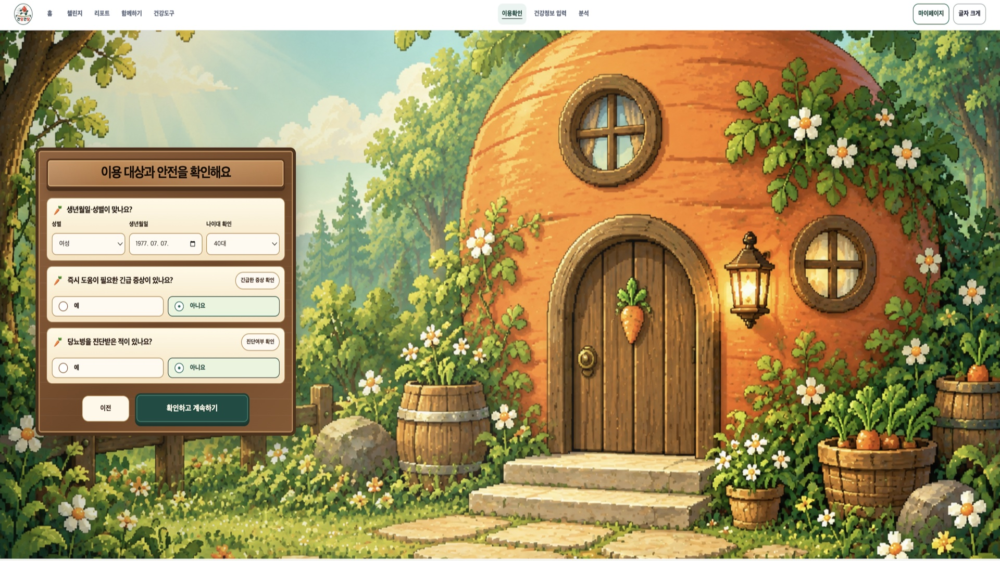
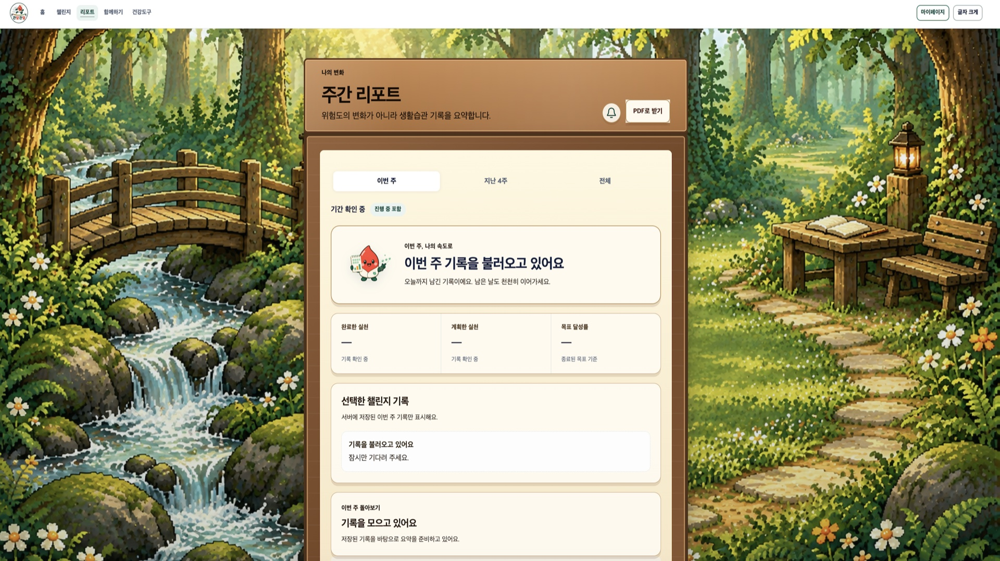

문제
생활습관 기록과 챌린지 진행 상태를 사용자가 한눈에 확인하고, 다음 실천으로 이어갈 수 있는 화면이 필요했습니다.
실행
웹 디자인 시안을 반응형 화면으로 구현하고 생활습관 챌린지 참여·기록 흐름을 구성했습니다. Chart.js로 기록을 시각화하고, 화면 데이터와 상태를 API 응답에 연결했습니다.
프론트엔드 관점
기록 수치뿐 아니라 진행 상태와 다음 행동이 함께 보이도록 화면을 구성했습니다. 로딩·빈 데이터·오류 상태도 구분해 사용자가 현재 상황을 알 수 있도록 했습니다.

